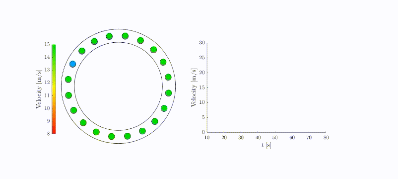
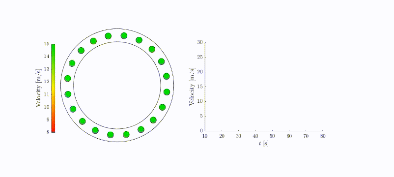

Smoothing Traffic Flow¶
Introduction¶
Autonomous vehicle is essential for control the traffic flow and would have higher potential if number of autonomous vehicles increases. From our analysis, 5% proportion of autonomous vehicles would be able to increase the traffic speed by more than 6%. This is very possible nowadays, and with more autonomous vehicles on highway the average speed will keep raising. We proved this by using control theorem framework and considered each autonomous vehicles as controllable nodes. We analysis controllability and stability of the system and designed a control strategy for autonomous vehicles to achieve the ability to smooth mixed traffic flow. In testing, we designed a ring road, for convenience, with mixed traffic driving inside, using the control strategy and get the analytical results on controllability, stability, and reachability.

Basis Theories¶
Model Establishment Schematic¶
We use blue car and dot to represent the autonomous vehicles, and green cars and dots to represent human driven vehicles. The first figure in the left hand side is the ring road traffic scenario, the second images represent the simplified system schematic. We have purple arrows indicate the interaction between adjacent vehicles. Orange arrows show information flow of the entire system. On the right hand side is the System matrix A of the entire mixed traffic dynamics.
{kind=link}
Scenario: Autonomous Vehicle Increases Traffic Speed¶
{kind=link}
The scenario that autonomous vehicle increases the traffic speed. (a) Is the scenario that all vehicles are human driven and the space between each two vehicles is equal for homogeneous car following dynamics. (b) Is the case of mixed traffic systems. The Autonomous vehicle can follow the front car in a short distance. As a result, the rear vehicle will have a larger space and equilibrium velocity increases as the distance increase. Hence, the entire traffic flow speed increase after adding one autonomous vehicle.
Impulse Perturbation¶
The graphs below represent impulse perturbation in traffic systems on a ring road. The second vehicle has initial perturbation.
- (a) All vehicles are human driven.
- (b) The first vehicle is CACC equipped which could adjusts behavior passively due to its direct preceding vehicle.
- (c)The first vehicle has optimal control strategy which can consider the global behavior of the entire mixed traffic flow.
By checking of these three graphs, it is obvious that the system with optimal control strategy which could consider global behavior have the best performance.
{kind=link}
Stablizing Traffic Flows¶
- (a) Traffic system with Human driven vehicles only is unstable in certain case.
- (b) The mixed traffic system becomes stable after introducing one autonomous vehicle with assigned control strategy.
- (c) The traffic flow with one autonomous vehicle could guide the traffic to a higher stable velocity via controlling the autonomous vehicle.
{kind=link}
Getting Started¶
Environment Setup¶
To run the code, the Modeling package, YALMIP, and the optimization solver, MOSEK, are needed to solve the semidefinite program in controller synthesis.
YALMIP:
Please install YALMIP using the provided link. Follow the Tutorial in the YALMIP website and download the YALMIP file. Once you obtained the YALMIP folder. We can put the whole YALMIP folder into our project folder.
MOSEK:
Please follow the installation instruction in MOSEK website to install MOSEK on your machine. Please remember to apply a license from the MOSEK website. After obtaining the license, you can put it in your project folder and your system document MOSEK path. The path is different depends on your system.
Matlab Implementation¶
Main File¶
demo_smoothing traffic_flow.m¶
Add path and initialization
Key parameters setting:
'mix' is set to 0 by default, which means there's no AV. While 'mix = 1' means the mixed traffic scenario. 'controllerType' set the control strategies for mixed traffic control.
'controllerType' value to strategies:
- 1.Optimal Control
- 2.FollowerStopper
- 3.PI with Saturation
brakeID indicate the index of vehicle that will brake first (interuption happen). N indicate the total number of vehicle in the experiment. s_star means the equilibrium spacing of each vehicle.
ControllerType parameter setting:- gamma_s means the preference setting of vehicle spacing.
- gamma_v means the preference setting of vehicle velocity.
- gamma_u means the preference setting of vehicle input.
if mix && controllerType == 1
%Cost Function Weight
gammaType = 1;
switch gammaType
case 1
gamma_s = 0.03;
gamma_v = 0.15;
gamma_u = 1;
case 2
gamma_s = 3;
gamma_v = 15;
gamma_u = 1;
end
K = lqr_sdp(N,s_star,gamma_s,gamma_v,gamma_u,1);
end
alpha_k setting is only for FollowerStopper strategy.
Animation setting:- velUpperBound means the upper bound of vehicle speed. It was set to 15 m/s. Corresponding to the green color for Animation.
- velLowerBound indicate the lower bound of vehicle speend. It was set to 8 m/s. Corresponding to the red color for Animation.
- vehicle size was set to 12 by default.
Vehicle parameters setting:
- v_max indicate the maximum velocity the vehicle can reach. acel_max and decel_max indicate the maximum acceleration and amximun deacceleration rate respectively. The Driver model is set by using OVM model.
- acel_max and dcel_max indicate the maximum acceleration rate and mininmum acceleration rate.
OVM Model setting:
-
alpha and beta was set to 0.6 and 0.9. Where alpha > 0 reflects the driver’s sensitivity to the difference between the current velocity and the spacing-dependent desired velocity V (si(t)), and beta > 0 reflects the driver’s sensitivity to the difference between the velocities of the front vehicle and the preceding vehicle
-
s_st, s_go indicate the spacing between vehicles that the velocity state change. When the spacing is smaller than space st. The vehicle speed will come down to zero. When the spacing is lareger than s_go(spacing for go). The vehicle will achieve the maximum velocity.
Simulation setting:
- TotalTime definite the end time (100s) of the simulations.
-
NumStep is calculated by TotalTime/Tstep
-
The Circumference indicate the ring circumference for the simulation. It is calculated bse on the value of the vehicle number N and equilibrium spacing s_star.
- The actuation setting set the time when the controller will be engaged.
Circumference = s_star*N;
if mix
ActuationTime = 0; %When will the controller work
else
ActuationTime = 9999;
end
Equilibrium state setting:
- v_star indicate the theoretically equilibrium velocity.
- s_ctr indicate the desire controller spacing which is set equal to the equilibrium spacing.
- v_ctr indicate the monotonically increasing function that the controller apply according to the spacing informations.(st < s < sgo).
Safe distance setting:
The minimum safe distance value is set to zero since the vehicle length is ignored.
Initial State for each vehicle:
_ dev_s indicate the deviation spacing for each vehicle. - dev_v means the deviation velocity. - v_ini indicate the initial velocity of each vehicle.
Theorectical part for the simulation:
Here is to determine if there are sufficient condition for the mixed traffic control simulation. And show some important parameters of the experiment setup.
disp(['Vehicle Number = ',num2str(N)]);
disp(['v_star = ',num2str(v_star)]);
disp(['s_star = ',num2str(s_star)]);
disp(['v_ini = ',num2str(v_ini)]);
disp(['controllerType = ',num2str(controllerType)]);
if (v_max*pi/(s_go-s_st)*sin(pi*(s_star-s_st)/(s_go-s_st))-alpha-2*beta)<=0
disp('Satisfy Sufficient Condition!');
else
disp('Not Satisfy Sufficient Condition!');
end
Simulation Module:
sd_actuate = 0;
for k = 1:NumStep-1
%Update acceleration
temp(2:end) = S(k,1:(end-1),2);
temp(1) = S(k,end,2);
V_diff(k,:) = temp-reshape(S(k,:,2),N,1);
temp(1) = S(k,end,1)+Circumference;
temp(2:end) = S(k,1:(end-1),1);
D_diff(k,:) = temp-reshape(S(k,:,1),N,1); %Real Following Distance
cal_D = D_diff(k,:); %For the boundary of Optimal Veloicity Calculation
cal_D(cal_D>s_go) = s_go;
cal_D(cal_D<s_st) = s_st;
%OVM Model
%V_d = v_max/2*(1-cos(pi*(h-h_st)/(h_go-h_st)));
%a2 = alpha*(V_h-v2)+beta*(v1-v2);
acel = alpha*(v_max/2*(1-cos(pi*(cal_D-s_st)/(s_go-s_st)))-S(k,:,2))+beta*V_diff(k,:);
acel(acel>acel_max)=acel_max;
acel(acel<dcel_max)=dcel_max;
% SD as ADAS to prevent crash
temp(2:end) = S(k,1:(end-1),2);
temp(1) = S(k,end,2); %temp is the velocity of the preceding vehicle
acel_sd = (reshape(S(k,:,2).^2,N,1)-temp.^2)./2./reshape(D_diff(k,:),N,1);
acel(acel_sd>abs(dcel_max)) = dcel_max;
S(k,:,3) = acel;
if (k*Tstep>20)&&(k*Tstep<22)
S(k,brakeID,3)=-5;
end
if k>ActuationTime/Tstep
switch controllerType
case 1
X(1:2:2*N,k) = reshape(D_diff(k,:),N,1)-s_ctr;
X(2:2:2*N,k) = reshape(S(k,:,2),N,1)-v_ctr;
u = -K*X(:,k);
case 2
dx10 = 9.5; dx20=10.75; dx30 = 11;
dv_temp = min(S(k,N-1,2)-S(k,N,2),0);
d1 = 1.5; d2 = 1.0; d3 = 0.5;
dx1 = dx10+dv_temp^2/2/d1;
dx2 = dx20+dv_temp^2/2/d2;
dx3 = dx30+dv_temp^2/2/d3;
dx = D_diff(k,N);
v_temp = min(S(k,N-1,2),12);
if dx<=d1
v_cmd = 0;
elseif dx<=d2
v_cmd = v_temp*(dx-dx1)/(dx2-dx1);
elseif dx<=d3
v_cmd = v_temp+(v_ctr-v_temp)*(dx-dx2)/(dx3-dx2);
else
v_cmd = v_ctr;
end
u = alpha_k*(v_cmd-S(k,N,2));
case 3
gl = 7; gu = 30; v_catch = 1; gamma_temp = 2;
if k-26/Tstep<=0
v_hisAvg = mean(S(1:k,N,2));
else
v_hisAvg = mean(S((k-26/Tstep):k,N,2));
end
v_target = v_hisAvg + v_catch*min(max((D_diff(k,N)-gl)/(gu-gl),0),1);
alpha_temp = min(max((D_diff(k,N)-max(2*V_diff(k,N),4))/gamma_temp,0),1);
beta_temp = 1-0.5*alpha_temp;
v_cmd(k+1) = beta_temp*(alpha_temp*v_target+(1-alpha_temp)*S(k,N-1,2))+(1-beta_temp)*v_cmd(k);
u = alpha_k*(v_cmd(k+1)-S(k,N,2));
end
if u>acel_max
u=acel_max;
elseif u<dcel_max
u=dcel_max;
end
if (S(k,N,2)^2-S(k,N-1,2)^2)/2/(S(k,N-1,1)-S(k,N,1)-sd)>abs(dcel_max)
u=dcel_max;
end
S(k,N,3) = u;
end
S(k+1,:,2) = S(k,:,2) + Tstep*S(k,:,3);
S(k+1,:,1) = S(k,:,1) + Tstep*S(k,:,2);
end
for k = 1:NumStep
V_avg(k) = mean(S(k,:,2));
end
Plots for Simulation result:
-
Figure with color map indicating the relationship among the vehicle position and velocity and simulation time.
figuresize = [250 150 400 300]; Lwidth = 1.2; figure; [xq, yq] = meshgrid(0:0.1:TotalTime,0:1:Circumference); x = repmat(Tstep:Tstep:TotalTime,1,N); y = mod(S(:,1,1),Circumference)'; for i=2:N y = [y mod(S(:,i,1),Circumference)']; end z = S(:,1,2)'; for i=2:N z = [z S(:,i,2)']; end Wsize = 16; zq = griddata(x,y,z,xq,yq); mesh(xq,yq,zq); view([0 90]); colormap(hot); %colormap(flipud(colormap)); caxis([0 15]); hcb = colorbar; hcb.TickLabelInterpreter = 'latex'; hcb.FontSize = 14; set(gca,'TickLabelInterpreter','latex','fontsize',14); xlabel('$t\;[\mathrm{s}]$','fontsize',Wsize,'Interpreter','latex','Color','k'); ylabel('Position $[\mathrm{m}]$','fontsize',Wsize,'Interpreter','latex','Color','k'); clabel = get(hcb,'label'); set(clabel,'String','Velocity $[\mathrm{m/s}]$','Interpreter','latex','fontsize',Wsize,'Color','k'); -
Plot for the brakeID vehicle and AV:
hold on; for i=1:N if ID(i) == 0 plot3(Tstep:Tstep:TotalTime,mod(S(:,i,1),Circumference),30*ones(TotalTime/Tstep,1),'.','color',[190 190 190]/255,'markersize',3); %For Label p1 = plot3(1:3,2*Circumference*ones(3,1),ones(3,1),'color',[190 190 190]/255,'linewidth',Lwidth); else plot3(Tstep:Tstep:TotalTime,mod(S(:,i,1),Circumference),30*ones(TotalTime/Tstep,1),'.','color',[0 0.4470 0.7410],'markersize',3); %For Label p2 = plot3(1:3,2*Circumference*ones(3,1),ones(3,1),'color',[0 0.4470 0.7410],'linewidth',Lwidth); end hold on; end %Brake Time plot3(20:Tstep:22,mod(S(20/Tstep:22/Tstep,brakeID,1),Circumference),30*ones(2/Tstep+1,1),'.','color',[0.6350 0.0780 0.1840],'markersize',3); %scatter3(Tstep:Tstep:TotalTime,mod(S(:,brakeID,1),Circumference),30*ones(TotalTime/Tstep,1),4,'k','filled'); axis([0 80 0 Circumference]); set(gcf,'Position',figuresize); fig = gcf; fig.PaperPositionMode = 'auto'; % print(gcf,['figs/StrongPerturbationAV_1'],'-depsc2','-r600'); %Velocity figure; for i=1:N if ID(i) == 0 p1 = plot(Tstep:Tstep:TotalTime,S(:,i,2),'-','linewidth',1,'Color',[190 190 190]/255); else p2 = plot(Tstep:Tstep:TotalTime,S(:,i,2),'-','linewidth',Lwidth,'Color',[0 0.4470 0.7410]); end hold on; end p3 = plot(Tstep:Tstep:TotalTime,V_avg,'-','linewidth',Lwidth,'Color','k');
Animation module:
-
Animation Setup
%% Animation if mix videoFile = 'Mix.mp4'; else videoFile = 'HDV.mp4'; end if videoOutput myVideo = VideoWriter(videoFile,'MPEG-4'); open(myVideo); end load('Animation_Color.mat'); figure(3); set(0,'defaultfigurecolor','w'); ax1 = subplot(1,2,1); % vehicle position R = Circumference/2/pi; for id = 1:N position(id) = plot(R*cos(S(1,id,1)/Circumference*2*pi),R*sin(S(1,id,1)/Circumference*2*pi),'o'); position(id).MarkerSize = vehicleSize; if ~mix position(id).MarkerFaceColor = [146,208,80]/255; position(id).MarkerEdgeColor = [0,0,0]; else if id == 20 position(id).MarkerFaceColor = [0,176,240]/255; position(id).MarkerEdgeColor = [0,0,0]; else position(id).MarkerFaceColor = [146,208,80]/255; position(id).MarkerEdgeColor = [0,0,0]; end end hold on; end axis equal; axis manual; axis([-R-20,R+20,-R-20,R+20]); set(gcf,'Position',[150,100,1000,450]); axis off; % Color colormap(velocityMap); hcb = colorbar; clabel = get(hcb,'label'); caxis([velLowerBound,velUpperBound]); set(clabel,'String','Velocity $[\mathrm{m/s}]$','Interpreter','latex','fontsize',12); hcb.TickLabelInterpreter = 'latex'; hcb.FontSize = 10; hcb.Position = [0.13 0.25 0.01 0.5]; % Road temp = linspace(0,2*pi,100); plot(0.87*R*cos(temp),0.87*R*sin(temp),'k','LineWidth',0.4); plot(1.13*R*cos(temp),1.13*R*sin(temp),'k','LineWidth',0.4); ax2 = subplot(1,2,2); for id = 1:N velocity(id) = animatedline('Color',[190 190 190]/255,'linewidth',1); if mix velocity(20) = animatedline('Color',[0 0.4470 0.7410],'linewidth',1.2); end end axis manual; axis([10 80 0 30]); set(gca,'TickLabelInterpreter','latex','fontsize',10); xlabel('$t\;[\mathrm{s}]$','fontsize',12,'Interpreter','latex'); ylabel('Velocity $[\mathrm{m/s}]$','fontsize',12,'Interpreter','latex'); fig = gcf; fig.Children(1).Position = [0.52 0.26 0.3 0.5]; -
Update for the Animation (show the update the vehicle location and state in the animation according to previous simulation data.
for i=10/Tstep:10:(TotalTime-20)/Tstep for id = 1:N ax1; position(id).XData = R*cos(S(i,id,1)/Circumference*2*pi); position(id).YData = R*sin(S(i,id,1)/Circumference*2*pi); if S(i,id,2)<velLowerBound temp = velLowerBound; elseif S(i,id,2)>velUpperBound temp = velUpperBound; else temp = S(i,id,2); end colorID = min(floor((temp-velLowerBound)/(velUpperBound-velLowerBound)*size(velocityMap,1))+1,size(velocityMap,1)); position(id).MarkerFaceColor = velocityMap(colorID,:); if mix position(20).MarkerFaceColor = [0,176,240]/255; end ax2; addpoints(velocity(id),i*Tstep,S(i,id,2)); end frame = getframe(gcf); if videoOutput writeVideo(myVideo,frame); end drawnow; pause(0.05); %pause(0.1); end if videoOutput close(myVideo); end
Functions¶
lqr_sdp.m¶
This function will generate the K value (the feedback gain) for the control input u(t) setup.
Optimal control input: u(t) = −Kx
function [K] = lqr_sdp(N,s_star,gamma_s,gamma_v,gamma_u,AV_number)
disp(['N = ',num2str(N)]);
epsilon = 1e-5;
[A,B,Q,R] = ring_traffic_model(N,s_star,gamma_s,gamma_v,gamma_u,AV_number); % Dynamics & Performance index
%% Call Yalmip
n = size(A,1); % number of states
m = size(B,2); % number of inputs
% assume each vehicle has a deviation
B1 = eye(n);
B1(1:2:n,1:2:n) = 0;
% B1 = B;
% assume disturbance is the same as inout
% variables
X = sdpvar(n);
Z = sdpvar(m,n);
Y = sdpvar(m);
% constraints
Constraints = [A*X - B*Z + (A*X - B*Z)' + B1*B1' <=0,
X - epsilon*eye(n)>=0,
[Y Z;Z' X] >=0];
obj = trace(Q*X) + trace(R*Y);
%opts = sdpsettings('solver','sedumi'); % call SDP solver: sedumi
opts = sdpsettings('solver','mosek'); % call SDP solver: mosek, this is often better
sol = optimize(Constraints,obj,opts);
Xd = value(X);
Zd = value(Z);
K = Zd*Xd^(-1);
end
ring_traffic_model.m¶
This function generate the dynamic model for the OVM model.
function [A,B,Q,R] = ring_traffic_model(N,s_star,gamma_s,gamma_v,gamma_u,AV_number)
% Generate a dynamic model for
%OVM
% if nargin < 2
% OVM = 1;
% end
OVM = 1;
alpha = 0.6;
beta = 0.9;
v_max = 30;
s_st = 5;
s_go = 35;
%s_star = 0.5*(s_st+s_go);
% General
if OVM
alpha1 = alpha*v_max/2*pi/(s_go-s_st)*sin(pi*(s_star-s_st)/(s_go-s_st));
alpha2 = alpha+beta;
alpha3 = beta;
else
alpha1 = 2.6;
alpha2 = 3;
alpha3 = 2;
end
A1 = [0,-1;alpha1,-alpha2];
A2 = [0,1;0,alpha3];
C1 = [0,-1;0,0];
C2 = [0,1;0,0];
pos1 = 1;
pos2 = N;
%Y = AY+Bu
A = zeros(2*N,2*N);
for i=1:(N-1)
A((2*i-1):(2*i),(2*pos1-1):(2*pos1))=A1;
A((2*i-1):(2*i),(2*pos2-1):(2*pos2))=A2;
pos1 = pos1+1;
pos2 = mod(pos2+1,N);
end
A((2*N-1):(2*N),(2*pos1-1):(2*pos1))=C1;
A((2*N-1):(2*N),(2*pos2-1):(2*pos2))=C2;
%Controller
Q = zeros(2*N);
for i=1:N
Q(2*i-1,2*i-1) = gamma_s;
Q(2*i,2*i) = gamma_v;
end
B = zeros(2*N,AV_number);
B(2*N,1) = 1;
if AV_number == 2
AV2_Index = floor(N/2);
A((2*AV2_Index-1):(2*AV2_Index),(2*AV2_Index-1):(2*AV2_Index))=C1;
A((2*AV2_Index-1):(2*AV2_Index),(2*AV2_Index-3):(2*AV2_Index-2))=C2;
B(2*AV2_Index,2) = 1;
end
R = gamma_u*eye(AV_number,AV_number);
%[K,S,e] = lqr(A,B,Q,R,0);
%[P,L,G] = care(A,B,Q);
end
Python Implementation¶
The Python implementation follows three main scenarios -
Scenario 1 is sharp braking at 20 seconds.
Scenario 2 is random distribution of vehicles and uniform distribution of initial velocity.
Scenario 3 is Experiment B of "Controllability Analysis and Optimal Control of Mixed Traffic Flow with Human-driven and Autonomous Vehicles".
The implementation follows the MATLAB version closely, utilizing NumPy instead of MATLAB methods where appropriate.
Functions¶
There are two main functions in the Python implementation :
- lqr_sdp
This code sets up our optimization problem, generating a
W = cp.Variable((m+n,m+n), symmetric=True) # W[0:m,0:m] == Y, # W[m:,0:m] == Z, # W[m:,m:] == X, objective = cp.Minimize( cp.trace( Q@W[m:,m:] ) + cp.trace( R@W[0:m,0:m] ) ) constraints = [(A@W[m:,m:] - B@W[0:m,m:]) + (A@W[m:,m:] - B@W[0:m,m:]).T + H@(H).T << 0] constraints += [ W[m:,m:] - epsilon*np.identity(n) >> 0] constraints += [W >> 0]
Experiment Results¶
Animation¶
Two demonstrations are shown below:
All the vehicles are HDVs: traffic wave emerges 
{kind=link}
There is one AV: dissipating traffic wave 
{kind=link}
Control Energy Results¶
Simulation results after ran 2000 random simulations for different number of cars.
- (a) the control energy needed to stabilize the traffic flow for each autonomous vehicle.
- (b) The time required to stabilize the traffic system.
It is clear that both the settling time and the control energy of each autonomous vehicle decrease by a factor of two approximately, when there are two autonomous vehicles in the traffic system uniformly. Based on the results, we may estimate the market penetration rate of autonomous vehicles to control traffic flow effectively when adopting the optimal control strategy. In the scenario of the following figure, if one wants to reject the influence of the perturbation on traffic flow within 30 seconds, a single autonomous vehicle can control the traffic flow consisting of around 20 HDVs. This number agrees with the results from real-world experiments
{kind=link}
Velocity Numerical Results¶
This is the numerical results for the scenario with a rapid and strong perturbation in the 6th vehicle.
- (a) Human driven vehicle only
- (b) Mixed traffic system has an autonomous vehicle that adopts the optimal control strategy.
The red color in the right figure means the velocity of vehicles slow down, and color yellow and white means fast. Here it is obvious that in scenario (a) there are more red which means slower than scenario (b).
We observe that if all the vehicles are human-driven, the perturbation may grow stronger during the propagation process (Figure a), while the autonomous vehicle with an optimal control strategy can respond actively to attenuate the perturbation and stabilize the traffic flow (Figure b). Here we only show the case where the 6th vehicle is under the strong perturbation. Indeed, the experiment results confirm that our strategy allows one autonomous vehicle to dampen strong traffic waves wherever they come from.
{kind=link}
Maximum Spacing Results¶
The comparison of three different strategies of maximum spacing of autonomous vehicle are shown below.
It is obvious that the maximum spacing in PI with Saturation, and Follower stopper is larger than Optimal control strategy. This means that the velocity of traffic applying PI and Follower Stopper strategies are much slower than using our optimal control strategy.
{kind=link}
Fuel Consumption Results¶
The comparison on fuel consumption of three different strategies is shown as following.
It is observed that our proposed strategy achieves evidently lower fuel consumption than Fol- lowerStopper and PI with Saturation when the perturbation happens within the range from the 1st to the 10th vehicle. This result validates the great potential of our strategy in improving fuel economy. We note that, when the perturbation happens within the range from the 11th to the 20th vehicle, which is ahead of the autonomous vehicle in a small distance, all of the three strategies require the autonomous vehicle to brake hard to guarantee safety. In these cases, the three control strategies have similar performance in terms of fuel consumption.
{kind=link}
Reference¶
- Zheng, Y., Wang, J., & Li, K. (2020). Smoothing traffic flow via control of autonomous vehicles. IEEE Internet of Things Journal, 7(5), 3882-3896.[pdf]